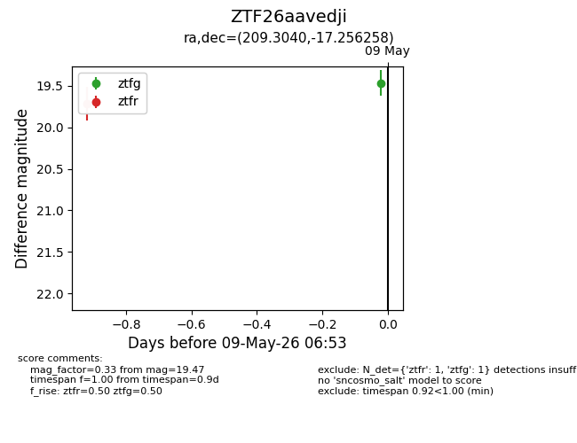
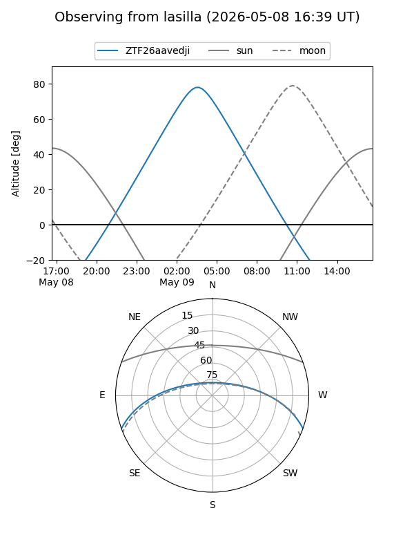
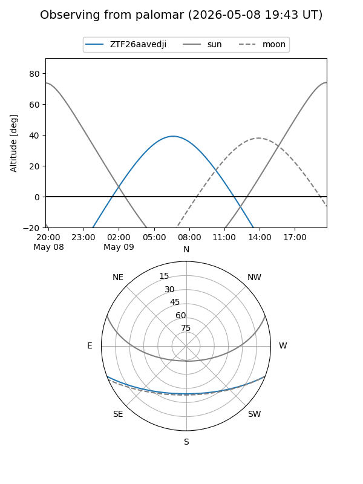
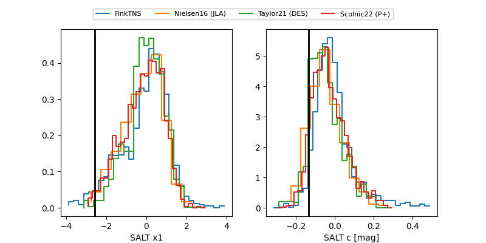

ZTF26aavedji
Target ZTF26aavedji at 2026-05-09 06:54
Aliases and brokers:
FINK: link
Lasair: link
ALeRCE: link
alt names
ZTF26aavedji (ztf,fink_ztf)
Coordinates:
equatorial (ra, dec) = 209.3040,-17.25626
equatorial (HMS+DMS) = 13:57:12.97,-17:15:22.53
galactic (l, b) = (324.5652,+42.83542)
Flags:
Photometry:
last ztfg=19.47, ztfr=19.71
1 ztfg, 1 ztfr detections
Lightcurve

Visibility


Additional plots
